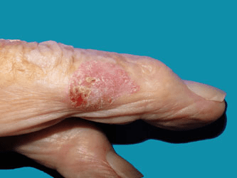

It may be possible to treat the area by freezing it. This is called cryotherapy or cryosurgery. Liquid nitrogen is sprayed onto the affected area. At the time, this feels very cold and a bit uncomfortable. Afterwards, you will have a scab, which usually falls off within a few weeks. This removes the affected skin.
A chemotherapy cream called 5-fluorouracil (Efudix®) may be used. It’s also called 5FU. Chemotherapy is the use of anti-cancer drugs.
You put the cream onto the skin regularly over a period of time. It can make the skin in the area red and inflamed before the Bowen’s disease gets better. Usually there are no other side effects.
A cream called Imiquimod (Aldara®) can also be used. This works by using the immune system to attack the abnormal cells. You put it on the skin regularly over a period of time. It will cause some redness and skin irritation before the Bowen’s disease improves.
Surgery may be used for small areas of Bowen’s disease that can be removed under local anaesthetic. This is not always the best option for large patches of Bowen’s disease.
Photodynamic therapy is a treatment that is used for different conditions. It can be a useful option for people with large areas of Bowen’s disease. It uses light combined with a light-sensitive drug (sometimes called a photosensitising agent) to destroy abnormal cells.
A photosensitising cream is put on the affected area. About 3–4 hours later, special light is shone onto the area for about 10–15 minutes. Afterwards, a dressing is put on to cover the area and protect it from light. Usually, more than one treatment is needed.
Scraping away the affected area (curettage) and using heat or electricity to stop any bleeding (electrocautery) are suitable for small patches of Bowen’s disease. A local anaesthetic is given before the doctor scrapes away the area using a spoon-shaped instrument called a curette.
An electrically heated loop or needle is then used to stop the bleeding from the wound (cauterise it) and destroy any remaining abnormal cells. After this treatment, a scar may develop.
Laser treatment uses intense light energy to remove tissue. It's sometimes used as a treatment for Bowen's disease
affecting the finger or genitals.